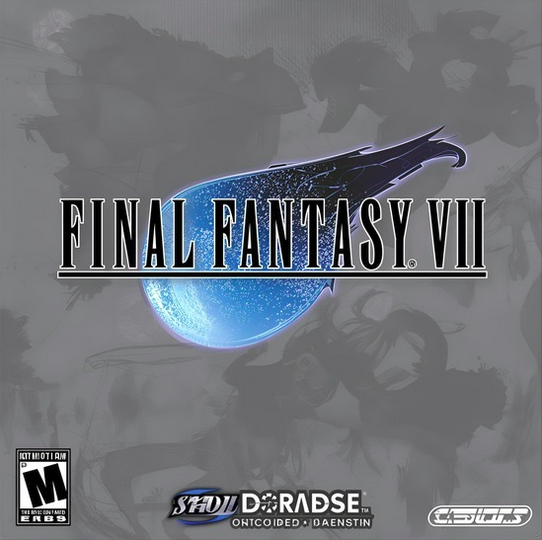
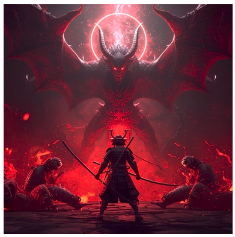

Articulos informativos sobre videojuegos clasicos e informacion sobre los videojuegos
Los videojuegos han evolucionado hasta convertirse en una forma de expresión artística y cultural. Diversas sagas han marcado esta transformación: *God of War* profundiza en mitologías con una narrativa madura; *The Legend of Zelda* destaca por su sentido de aventura y exploración; *Onimusha* combina acción y estética samurái en un Japón feudal sobrenatural; *Brothers in Arms* aborda la Segunda Guerra Mundial desde un enfoque táctico y realista; *Crash Bandicoot* representa el espíritu colorido de las plataformas clásicas; *Halo* revolucionó los shooters con su ciencia ficción y multijugador innovador; y *Final Fantasy VII* se consolidó como un RPG influyente por su historia y personajes. En conjunto, estas sagas reflejan la diversidad creativa del medio y su impacto en la cultura del entretenimiento.

Articulo sony de god-of-war


articulo diario AS Final_Fantasy_VII


Articulo VidaExtra de onimusha


articulo hobby consolas de crash


Articulo Press Over de Halo


Articulo BBC de sonic


articulo SEGAsaturno de the legend of zelda


Articulo steam brother in arms